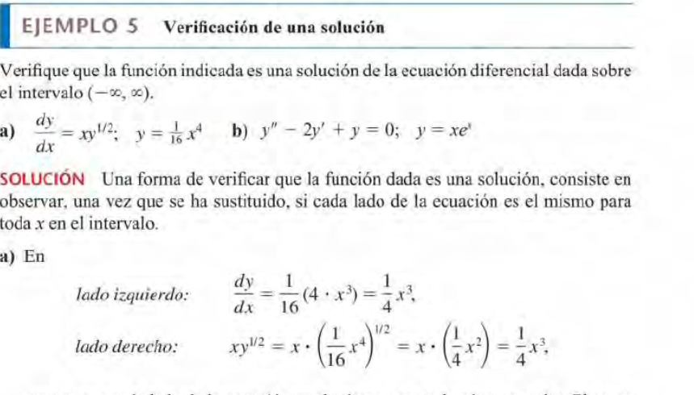

Ec Diferencial
Ec que contiene las derivadas de una o mas funciones desconocidas ( vars dependientes)
respecto a una o mas vars dependientes
Clasificaciones
Puede pertenecer a varias clasificaciones
Orden
El orden será el orden de la mayor derivada en la ecuación
Es el numero que acompaña ala d.
Tipo
EDP
Ecuacion diferencial parcial
EDO
Ecuación diferencial ordinaria.
Diferencia entre EDO y EDP
EDO contiene derivadas ordinarias que dependen de una sola var independiente, mientras que
EDP involucra derivas parciales
Solucion EDO
- Se reemplaza la funcion y sus derivadas en la ED
- Se debe cumplir la igualdad ( como en preca lit)
Verificacion solucion explicita

Solucion implicita EDO
Se da cuango G(x,y) = 0
Soluciones uniparametricas
Se da cuando al resolver una ED, se obtiene UNA sola constante
n-parametricas
La ED tiene un infinito numero de soluciones, y a cada uno le corresponde una constante
Que es una solución?
Una función es una solución si está definida en un rango en el q la
función es derivable y satisface la ecuación